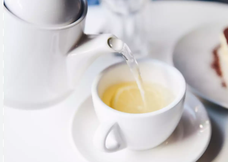
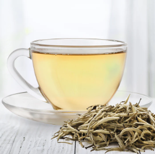

White Tea

White tea is made from the Camellia sinensis plant.
Its leaves and buds are picked just before they are fully open, when they’re covered in fine white hairs. This is where white tea gets its name (1Trusted Source).
Green tea and black tea are also made from the Camellia sinensis plant. However, different processing methods give them their unique flavors and aromas.
White tea is the least processed of the three teas. Because of this, it retains a high amount of antioxidants (2, 3).
This is thought to be one reason why studies have linked white tea with many health benefits. For example, it may help reduce the risk of heart disease, combat skin aging and even help with weight loss.
Benefits of white Tea
- It’s Rich in Antioxidants
- White tea is packed
with polyphenols, which have antioxidant benefits. They help reduce chronic
inflammation by protecting the body against damage from free radicals.
- May Reduce the Risk of Heart Disease
- Polyphenols like those
found in white tea may help relax blood vessels, boost immunity and prevent bad
cholesterol from becoming oxidized. These factors may help lower the risk of
heart disease.
- Could Help You Lose Weight
- White tea is a good
source of caffeine and catechins like EGCG. These two compounds may have a
synergistic effect that helps the body burn fat and boost metabolism.
- Help Protect Your Teeth from Bacteria
- White tea is a great
source of fluoride, catechins and tannins. Several studies have shown that
these compounds can help fight bacteria that cause plaque on teeth.
- Has Compounds That May Fight Cancer
- Test-tube studies have
found that white tea extract suppressed several types of cancer cells and
stopped them from spreading. However, more human research is needed.

For More Information, Click the above White Tea Cup AREA